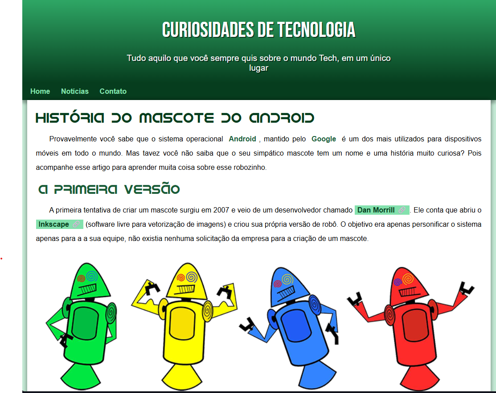

Projeto: História do Mascote Android
Desenvolvido como parte do curso de HTML5 e CSS do renomado professor Gustavo Guanabara pela plataforma CursoemVídeo, este projeto educacional combina aprendizado técnico com conteúdo informativo, apresentando de forma atraente a curiosa história por trás do mascote do sistema operacional Android.
A página web foi cuidadosamente elaborada para praticar os fundamentos de desenvolvimento front-end, desde a estruturação semântica com HTML5 até técnicas avançadas de estilização com CSS3. O design responsivo garante uma experiência de leitura adequada em diferentes dispositivos, utilizando recursos como imagens adaptáveis e um layout que se ajusta automaticamente a diferentes tamanhos de tela.
O conteúdo principal narra de forma envolvente como surgiu o simpático Bugdroid que conhecemos hoje. Partindo da primeira versão chamada Dandroids, criada em 2007 pelo desenvolvedor Dan Morrill, até chegar à versão final desenvolvida pela ilustradora russa Irina Blok, contratada pelo Google para dar rosto ao sistema operacional. A narrativa é enriquecida com imagens comparativas e um vídeo explicativo incorporado diretamente na página.
Um dos destaques é a seção que revela como as diferentes versões do Android receberam nomes de doces em ordem alfabética - uma curiosidade que muitas pessoas desconhecem. Além de informativo, o projeto serve como exercício prático para aplicar conceitos importantes como: o uso correto de tags semânticas, criação de variáveis CSS para padronização de cores e fontes, implementação de efeitos hover em links, e técnicas de posicionamento de elementos.
Todo o código foi desenvolvido seguindo a metodologia passo a passo característica do professor Gustavo Guanabara, conhecida por transformar conceitos complexos em aprendizado acessível e prático. O projeto não apenas cumpre seu objetivo educativo como resultado do curso, mas também se torna um exemplo de como conteúdo técnico pode ser apresentado de forma clara e visualmente atraente para o público geral.
 -Voltar